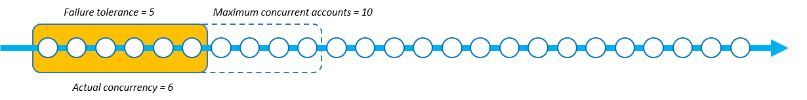
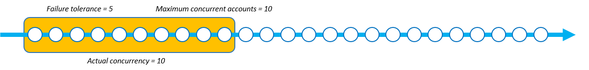
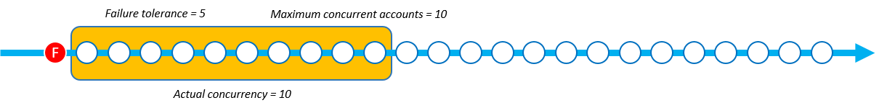

同時実行モードパラメータ
同時実行モードは、スタックセット操作中の同時実行レベルの動作を選択できる StackSetOperationPreferences のパラメータです。以下のいずれかのモードを選択できます。
-
厳密な障害耐性: このオプションでは、失敗したアカウントの数が障害耐性 +1 の値を超えないように、同時実行レベルを動的に下げます。実際の同時実行数の初期値は、同時アカウントの最大数の値または障害耐性 +1 の値のいずれか低い方に設定されます。その場合、実際の同時実行数は障害の数に比例して減少します。これがデフォルトの動作です。
-
ソフト障害耐性: このオプションは障害耐性と実際の同時実行性を切り離します。これにより、障害の数に関係なく、スタックセットの操作を同時アカウントの最大数の値で設定された同時実行レベルで実行できます。
厳密な障害耐性では、障害が発生するたびに同時実行性が低下するため、スタックセットの操作に障害が発生するため、デプロイ速度が低下します。ソフト障害耐性は、AWS CloudFormation 安全機能を活用しながらデプロイ速度を優先させます。これにより、既存のリソース、サービスクォータ、権限に関連する問題など、一般的な問題について、スタックセットの操作障害を確認して対処できます。
StackSets スタック操作の失敗の詳細については、「スタックオペレーション失敗の一般的な原因」を参照してください。
同時アカウントの最大数と障害耐性の詳細については、「スタックセットオペレーションのオプション」を参照してください。
各同時実行モードの仕組み
以下の画像は、スタックセット操作中の各同時実行モードの動作を視覚的に表したものです。ノードの文字列は 1 つの AWS リージョンへのデプロイを表し、各ノードがターゲット AWS アカウントです。
- 厳密な障害耐性
-
厳密な障害耐性を使用するスタックセット操作で、障害耐性の値が 5 に設定され、同時アカウントの最大数の値が 10 に設定されている場合、実際の同時実行数は 6 になります。これは、障害耐性の値 5 +1 が同時アカウントの最大数の値よりも低いためです。
以下の図は、障害耐性の値が同時アカウントの最大数の値に与える影響と、両方がスタックセット操作の実際の同時実行性に与える影響を示しています。
デプロイが開始され、スタックインスタンスに障害が発生すると、安全なデプロイを実現するために実際の同時実行数が減少します。StackSets が 1 つのスタックインスタンスのデプロイに失敗すると、実際の同時実行数は 6 から 5 に減少します。


厳密な障害耐性モードでは、障害が発生したスタックインスタンスの数に比例して実際の同時実行数が減少します。次の例では、StackSets がさらに 2 つのスタックインスタンスのデプロイに失敗し、実際の同時実行数が 5 から 3 に減少して、失敗したスタックインスタンスの合計が 3 になっています。

StackSets では、障害が発生したスタックインスタンスの数が障害耐性 +1 の定義値に等しい場合、スタックセットの操作に失敗します。次の例では、障害が発生したスタックインスタンスが 6 つあり、障害耐性の値が 5 の場合、StackSets は操作に失敗します。

この例では、StackSets はスタックセットの操作を停止する前に 9 つのスタックインスタンス (3 つは成功、6 つは失敗) をデプロイしました。
- ソフト障害耐性
-
ソフト障害耐性を使用するスタックセット操作で、障害耐性の値が 5 に設定され、同時アカウントの最大数の値が 10 に設定されている場合、実際の同時実行数は 10 になります。
デプロイが開始され、スタックインスタンスに障害が発生しても、実際の同時実行数は変わりません。次の例では、1 つのスタック操作が失敗しましたが、実際の同時実行数は 10 のままです。
スタックインスタンスにさらに 2 回障害が発生しても、実際の同時実行数は 10 のままです。

StackSets では、障害が発生したスタックインスタンスの数が障害耐性を超えた場合、スタックセットの操作に失敗します。次の例では、障害が発生したスタックインスタンスが 6 つあり、障害耐性のカウントが 5 の場合、StackSets は操作に失敗します。ただし、同時実行キューの残りの操作が終了するまで操作は終了しません。

StackSets は、同時実行キューにすでに存在するスタックインスタンスを引き続きデプロイします。つまり、障害が発生したスタックインスタンスの数は障害耐性よりも多くなる可能性があるということです。次の例では、スタックセットの操作が障害耐性の 5 に達したにもかかわらず、同時実行キューに実行すべき操作が 7 つ残っているため、8 つのスタックインスタンスが失敗しています。

この例では、StackSets はスタックセットの操作を停止する前に 15 つのスタックインスタンス (7 つは成功、8 つは失敗) をデプロイしました。
デプロイ速度に基づいて、厳密な障害耐性とソフト障害耐性のどちらかを選択します。
厳密な障害耐性モードとソフト障害耐性モードのどちらを選択するかは、スタックセットのデプロイの優先速度と許容されるデプロイ失敗数に左右されます。
次の表は、合計 1,000 個のスタックインスタンスをデプロイしようとして失敗したスタックセット操作を、各同時実行モードがどのように処理するかを示しています。各シナリオでは、障害耐性の値は 100 スタックインスタンスに設定され、同時アカウントの最大数の値は 250 スタックインスタンスに設定されています。
StackSets は実際にはスライディングウィンドウとしてアカウントをキューに入れていますが (「各同時実行モードの仕組み」を参照)、この例では操作をバッチで示して各モードの速度を示しています。
厳密な障害耐性
この例では、厳密な障害耐性モードを使用しているため、先行する各バッチで発生した障害の数と比較して、実際の同時実行性が低下します。各バッチには 20 個の失敗したインスタンスがあり、スタックセット操作が障害耐性の値の 100 に達するまで、次のバッチの実際の同時実行数は 20 ずつ低下します。
次の表では、最初のバッチの実際の同時実行数は 101 スタックインスタンスです。実際の同時実行数は 101 です。これは、同時アカウントの最大数 (250) と障害耐性 (100) +1 のどちらか低い値であるためです。各バッチには 20 の失敗したスタックインスタンスのデプロイが含まれ、それ以降の各バッチの実際の同時実行数は 20 スタックインスタンスずつ減少します。
| 厳密な障害耐性 | バッチ 1 | バッチ 2 | バッチ 3 | バッチ 4 | バッチ 5 | バッチ 6 |
|---|---|---|---|---|---|---|
| 実際の同時実行数 | 101 | 81 | 61 | 41 | 21 | - |
| 失敗したインスタンス数 | 20 | 20 | 20 | 20 | 20 | - |
| 成功したスタックインスタンス数 | 81 | 61 | 41 | 21 | 1 | - |
厳密な障害耐性を使用した操作では、スタックセット操作が 100 個のスタックインスタンスの障害耐性の値に達するまでに、5 つのバッチで 305 個のスタックインスタンスのデプロイが完了しました。スタックセット操作は、失敗する前に 205 個のスタックインスタンスを正常にデプロイします。
ソフト障害耐性
ソフト障害耐性モードを使用したこの例では、障害が発生したインスタンスの数に関係なく、250 個のスタックインスタンスの同時アカウントの最大数の値で定義されている実際の同時実行数と同じ値が維持されます。スタックセット操作は、障害耐性の値である 100 個のインスタンスに達するまで、実際の同時実行数は変わりません。
次の表では、最初のバッチの実際の同時実行数は 250 スタックインスタンスです。実際の同時実行数は 250 です。これは、同時アカウントの最大数の値が 250 に設定されており、ソフト障害耐性モードにより、StackSets は障害の数に関係なく、この値を実際の同時実行数として使用できるためです。この例では、各バッチに 50 件の障害が発生していますが、実際の同時実行性には影響しません。
| ソフト障害耐性 | バッチ 1 | バッチ 2 | バッチ 3 | バッチ 4 | バッチ 5 | バッチ 6 |
|---|---|---|---|---|---|---|
| 実際の同時実行数 | 250 | 250 | - | - | - | - |
| 失敗したインスタンス数 | 50 | 50 | - | - | - | - |
| 成功したスタックインスタンス数 | 200 | 200 | - | - | - | - |
同じ同時アカウントの最大数の値と障害耐性の値を使用したソフト障害耐性モードでの操作では、2 つのバッチで 500 件のスタックインスタンスのデプロイが完了しました。スタックセット操作は、失敗する前に 400 個のスタックインスタンスを正常にデプロイします。
AWS Management Console を使用した同時実行モードの選択
[デプロイオプションの設定] ページで、新規または既存のスタックセットの [同時実行モード] を選択できます。
![[デプロイオプション] ページには、[同時実行モード] のオプションが表示されます。](images/concurrency-console.png)
AWS Management Console を使用した新しいスタックセットの作成の詳細については、「スタックセットの作成」を参照してください。
AWS Management Console を使用した既存のスタックセットの更新の詳細については、「AWS CloudFormation コンソールを使用してスタックセットを更新する」を参照してください。
AWS Management Console を使用した新しいスタックセットの削除の詳細については、「AWS Management Console を使用してスタックセットを削除する」を参照してください。
AWS Command Line Interface を使用した同時実行モードの選択
ConcurrencyMode パラメータと次の StackSets コマンドを使用できます。
これらのコマンドには、ConcurrencyMode 設定を使用できる --operation-preferences という既存のパラメータがあります。ConcurrencyMode には次のいずれかの値を設定できます。
-
STRICT_FAILURE_TOLERANCE -
SOFT_FAILURE_TOLERANCE
次の例では、STRICT_FAILURE_TOLERANCE ConcurrencyMode を使用し、FailureToleranceCount を 10、MaxConcurrentCount を 5 に設定したスタックインスタンスを作成します。
aws cloudformation create-stack-instances \ --stack-set-nameexample-stackset\ --accounts123456789012\ --regionseu-west-1\ --operation-preferences ConcurrencyMode=STRICT_FAILURE_TOLERANCE,FailureToleranceCount=10,MaxConcurrentCount=5
AWS Command Line Interface (CLI) を使用した新しいスタックセットの作成の詳細については、「スタックセットの作成」を参照してください。
AWS CLI を使用した既存のスタックセットの更新の詳細については、「AWS CLI を使用してスタックセットを更新する」を参照してください。
AWS CLI を使用した新しいスタックセットの削除の詳細については、「AWS CLI を使用してスタックセットを削除する」を参照してください。